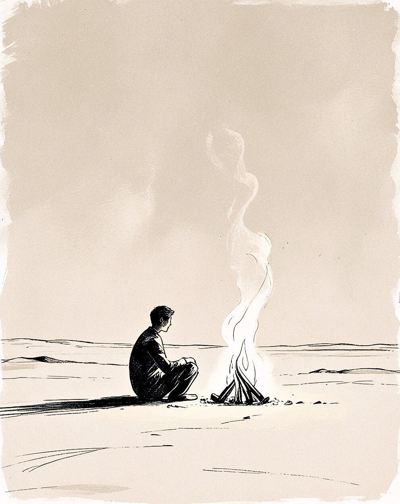

My Projects

Journalist
Minimalist journaling app built with Vanilla JavaScript and Firebase, focused on clarity, writing flow and mobile-first UX.
This is the first application I built that I actually use every day.

This is my personal portfolio, where you can get to know me both as a developer and as a human being. Here you will find my projects, my thoughts about learning, and the steps I am taking along my pathway.
I hope this place feels calm, honest, and real.
I’m learning frontend development by building real projects.
I focus on understanding how applications actually work — state, data flow and user interaction — not just how they look.
Journalist is my first full application and the foundation of everything I build next.
Minimalist journaling app built with Vanilla JavaScript and Firebase, focused on clarity, writing flow and mobile-first UX.
This is the first application I built that I actually use every day.